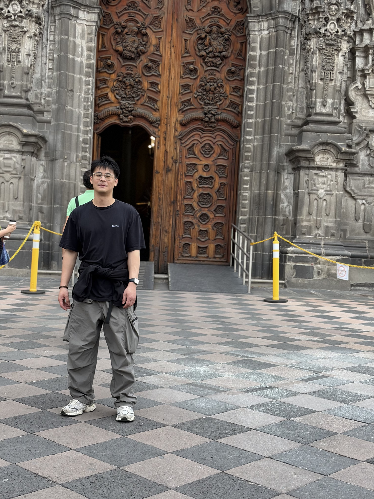

CS Student · New Grad May 2026 · Hunter College, CUNY
About
Hi, I'm Luis — a CS student at Hunter College,
CUNY, graduating in May 2026. I'm a new grad actively looking for my
first full-time software engineering role where I can keep learning,
contribute to a real product, and grow alongside a great team.
I love building things — from full-stack web apps to real-time
computer vision systems. There's something satisfying about taking
an idea from a blank file all the way to something that actually
works in a browser. I care a lot about writing code that's clean and
makes sense to the next person who reads it.
Outside of coding, I'm into skiing, meeting new people, and
exploring new places — that photo was taken in Mexico City. I speak
English, Mandarin, and conversational Spanish, so I'm always happy
to connect with people from different backgrounds.

Sep 2024 – May 2026 · GPA 3.24 · New York, NY
2019 – 2021 · New York, NY
Skills
Projects
Full-stack job application tracker with JWT-based auth, resume parsing (PDF & Word via mammoth/pdfreader), and AI-powered resume analysis via Groq (llama-3.1-8b-instant). Pulls real job listings from the Adzuna API, stores application state in PostgreSQL, and surfaces a dashboard for tracking every stage of the hiring pipeline. Backend deployed on Render, frontend on Vercel.
Real-time exercise form detection system that streams browser webcam frames to a Python/Flask backend for pose inference, returning live form classification to a React frontend. Built a MediaPipe pipeline computing 33 body keypoints per frame, a rep-counting state machine, and an LLM-backed feedback engine that converts detected form errors into personalized correction cues.
Full-stack fitness tracking web app built end-to-end as the sole engineer. Designed a normalized MySQL schema for users, workouts, and goals; implemented CRUD endpoints with historical progress comparison; and developed a query layer powering time-series progress charts — all without third-party UI libraries.
Python data pipeline that ingests, joins, and cleans 4 NYC Open Data CSV datasets via multi-key Pandas joins, with handling of schema drift and missing values. Produced visualizations — bar charts, heatmaps, and regression plots — surfacing funding-versus-graduation-rate correlations across NYC boroughs.